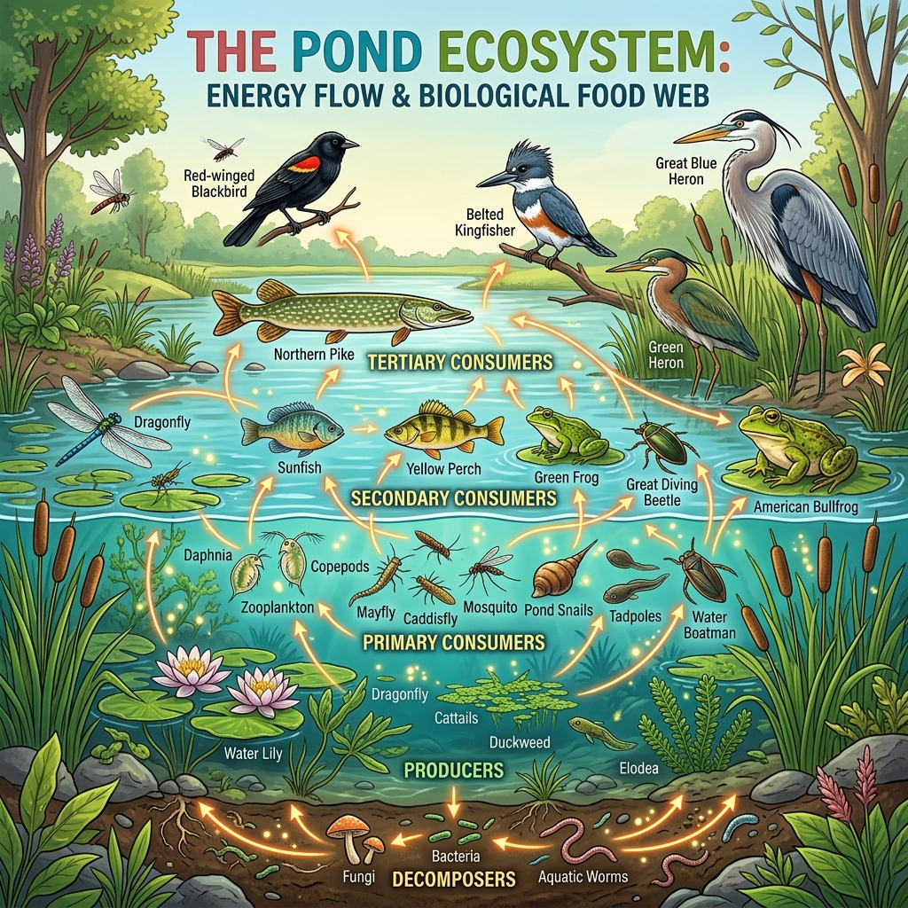

Nadie sobrevive solo. Descubre cómo fluye la energía en la naturaleza.
Muestra cómo la energía del Sol pasa de un ser vivo a otro. Todos estamos conectados.

La energía fluye: Sol → Productores → Consumidores → Descomponedores.
Fabrican su propio alimento mediante la fotosíntesis. Son la base de toda cadena.
Ejemplos en Colombia: Pastos de los Llanos, árboles de la selva amazónica, frailejones del Páramo de Sumapaz.
Descomponen los restos de seres vivos muertos y devuelven los nutrientes al suelo. Sin ellos, el planeta estaría lleno de basura.
Ejemplos: Hongos, bacterias y lombrices de tierra.
En la realidad no hay una sola cadena sino muchas entrelazadas formando una red. Si una especie desaparece, afecta a muchas otras.
¿Sabías que...?
¡Solo el 10% de la energía pasa de un nivel al siguiente! Por eso hay más plantas que herbívoros, y más herbívoros que carnívoros.
1. ¿Quiénes son los productores en una cadena alimenticia?
2. ¿Qué porcentaje de energía pasa de un nivel al siguiente?
3. ¿Qué animal colombiano es un consumidor secundario?